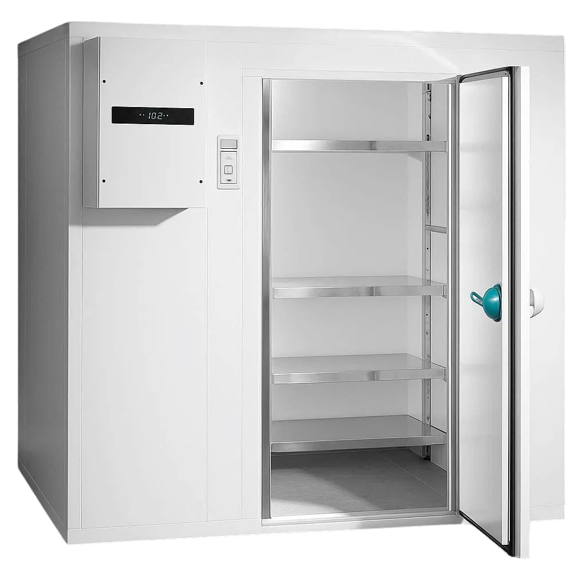
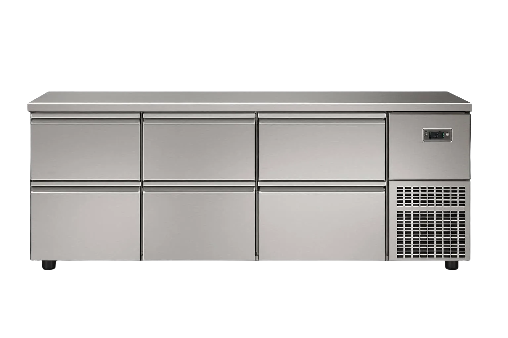
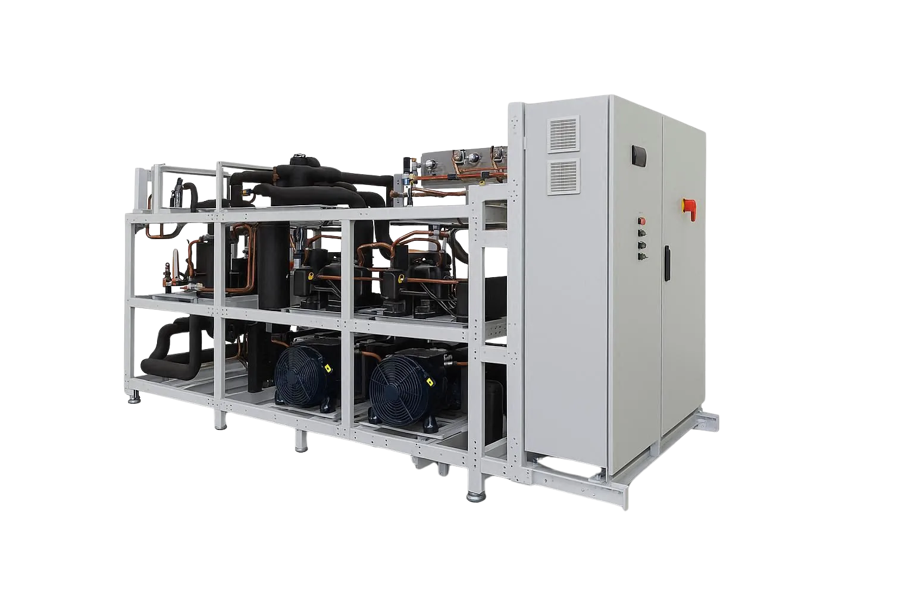
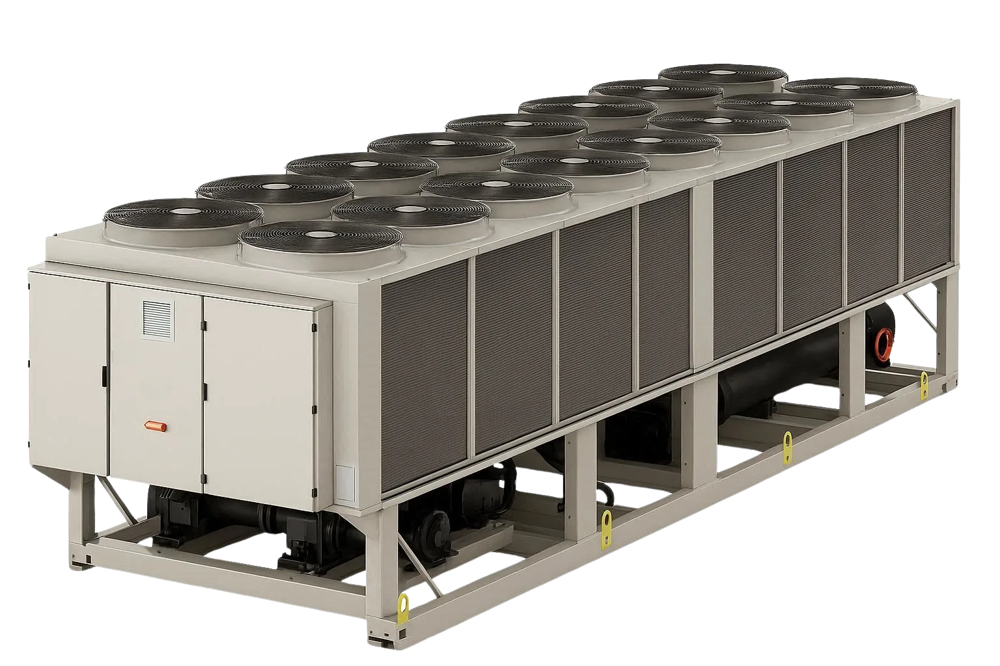
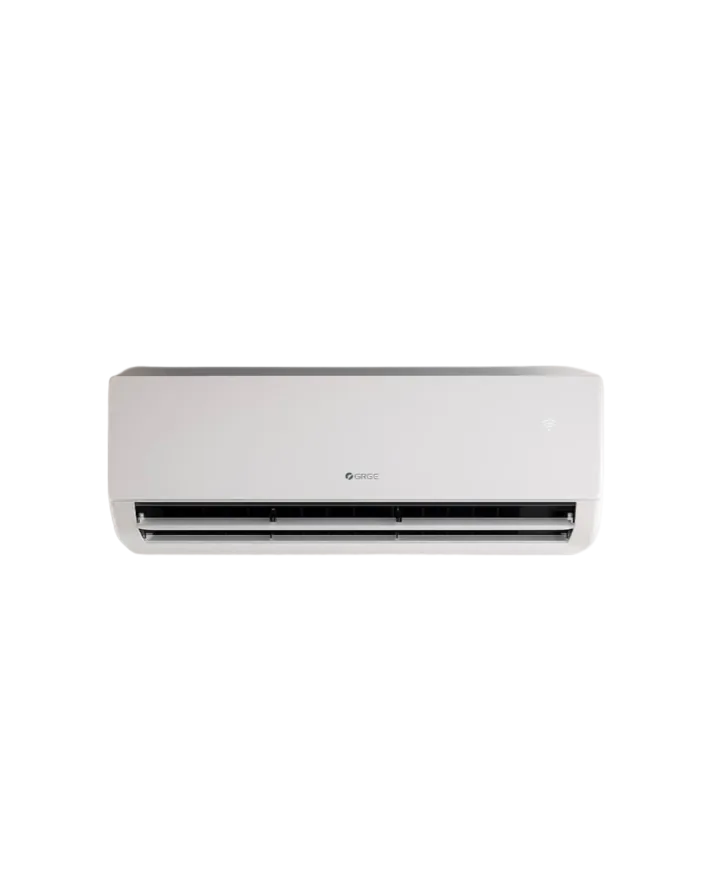
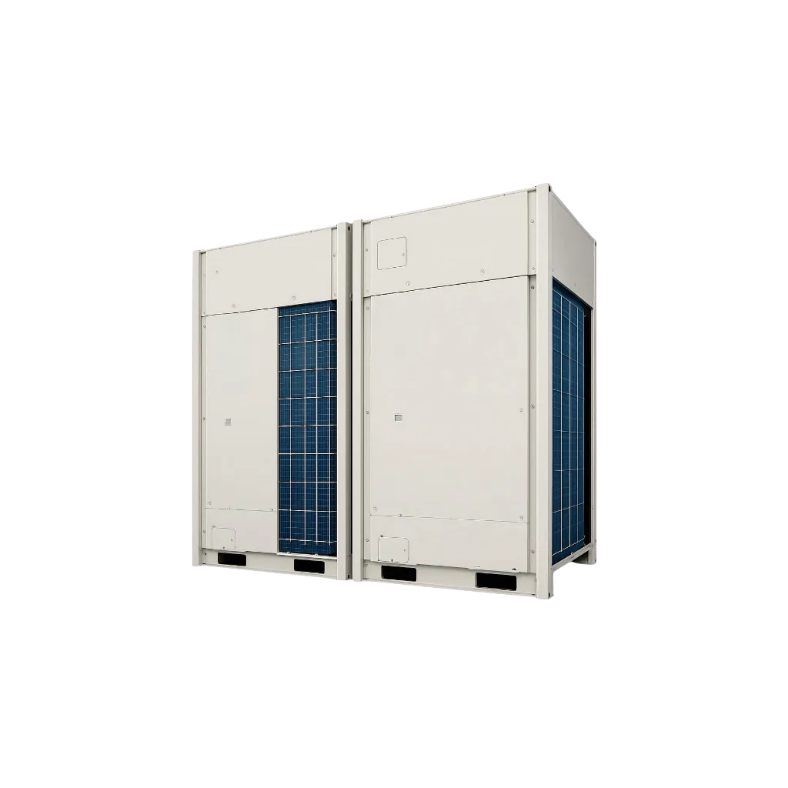
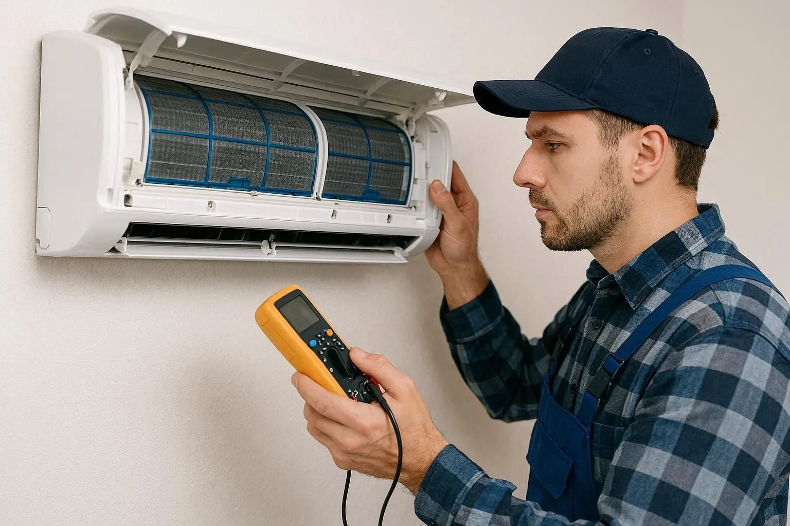
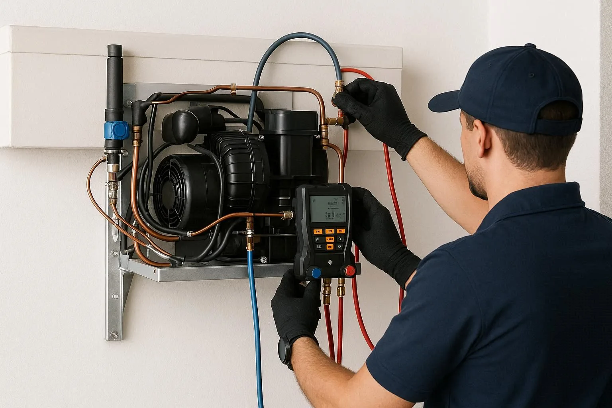

Von der Planung bis zum Service
Kälte & Klima.
Traun & Linz.
Planung, Installation und Wartung von Kälte- und Klimaanlagen für Privatkunden, Gewerbe und Gastronomie in Traun und im Raum Linz.

Kältetechnik
Gewerbliche und industrielle Kühllösungen für alle Anforderungen – fachgerecht geplant, installiert und gewartet.

Kühlzellen
Wir planen und installieren maßgefertigte Kühlzellen für alle Anforderungen. Von der kleinen Restaurantküche bis zur großen Lagerhalle – jede Kühlzelle wird nach Ihren individuellen Bedürfnissen dimensioniert und fachgerecht montiert.
Unsere Kühlzellen entsprechen allen aktuellen Normen und werden mit energieeffizienten Kältemaschinen ausgestattet.

Kühlpulte
Kühlpulte für die Gastronomie und den Lebensmittelhandel – präzise temperiert, hygienisch und energiesparend. Wir arbeiten mit führenden Herstellern zusammen und finden die optimale, individuell nach Kundenwunsch abgestimmte Lösung für Ihre Auslagefläche.
Ob Salattheke, Fleischpräsenter oder kombiniertes Kühl-/Heißpult – wir installieren und warten alle gängigen Systeme.

Verbundanlagen
Verbundanlagen sind ideal für größere Gewerbebetriebe mit mehreren Kühlstellen. Eine zentrale Kältemaschine versorgt dabei mehrere Kühlmöbel oder -räume gleichzeitig – energieeffizient und wartungsoptimiert.
Wir planen, installieren und warten komplexe Verbundanlagen für Supermärkte, Großküchen und Industriebetriebe.
Klimaanlagen & Klimatechnik
Energieeffiziente Klimasysteme und Wärmepumpen für optimales Raumklima – das ganze Jahr über.

Kaltwassersätze
Kaltwassersätze (Chiller) sind die Herzstücke zentraler Klimatisierungssysteme. Sie erzeugen gekühltes Wasser, das über ein Rohrnetz Klimageräte, Fancoils oder Kühldecken versorgt.
Wir installieren und warten Kaltwassersätze für Bürogebäude, Hotels, Produktionsstätten und Rechenzentren aller Größen.

Split- und Multi-Split-Klimaanlagen
Klimaanlagen sorgen für angenehme Temperaturen zu jeder Jahreszeit. Sie kühlen Räume effizient im Sommer und können je nach System auch zum Heizen eingesetzt werden – für maximalen Komfort und ein optimales Raumklima.
Als Fachbetrieb installieren wir moderne Split-, Multi-Split- und VRF-Klimaanlagen für Privathäuser, Wohnungen und gewerbliche Objekte.

VRF-Systeme
VRF-Systeme (Variable Refrigerant Flow) bieten höchste Flexibilität für größere Gebäude. Mehrere Innengeräte werden von einer zentralen Außeneinheit versorgt – mit individueller Regelung je Zone.
Als Fachbetrieb planen und installieren wir VRF-Systeme für Hotels, Bürogebäude und Mehrfamilienhäuser.
Wartung & Service für Kälte- und Klimaanlagen
Regelmäßige Wartung verlängert die Lebensdauer Ihrer Anlage, sichert die Effizienz und verhindert kostspielige Ausfälle.

Jährlicher Service
Vollständige Inspektion, Reinigung der Wärmetauscher, Überprüfung aller Sicherheitseinrichtungen und Kältemittelfüllung nach F-Gas-Verordnung.
Kontakt & Termine →
Störungsbeseitigung
Schnelle Diagnose und Reparatur bei akuten Ausfällen. Rund um die Uhr, auch an Wochenenden und Feiertagen. Direkt anrufen – wir kommen.
+43 660 2826586 →Beratung & Angebot
Kostenlose Erstberatung für Neuanlagen und Modernisierungen. Wir analysieren Ihren Bedarf und erstellen ein transparentes, unverbindliches Angebot.
Kontakt & Termine →Ihr nächster Schritt
Gute Technik beginnt
mit einem Gespräch.
Informieren Sie sich über unsere aktuelle Terminverfügbarkeit.
Bei
einer akuten Störung erreichen Sie uns telefonisch.